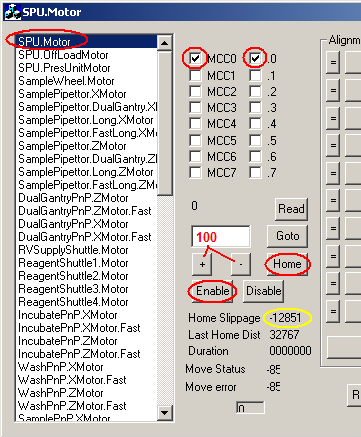
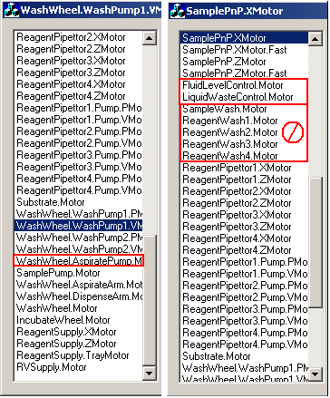

This procedure describes how to use the SMCTest.exe program for troubleshooting motor motion errors.
Use the SMCtest.exe program to move any stepper motor by direct input to the associated MCC PCB channel.

|

|
-
Perform the SMC Test.
-
Select
to establish a Desktop Sharing connection to the AU.
-
Select the
SMCtest.exe shortcut located on the AU desktop,
-
Select the motor from the list in the
SMC Test pop-up window.
-
In the
SMC Test pop-up window, select
.
Caution: Avoid hardware crashes. The SMC Test homes devices without consideration of any intersecting devices that are in the way.
Note:
- Home Slippage will be displayed after each Home operation. The initial distance to home can be a large number.
- The MCC PCB and channel for the selected motor is shown in the SMC test display. Selecting the MCC # and Channel # also identifies the associated motor.
- Some motors do not move when their interlock switch is open.
- Homing the bulk feeder often causes a jam.
- Homing any of the peristaltic pump wash motors causes the SMC Test to exit and can cause a wash tower to overflow (although the motors generally run in the opposite direction from normal when homed).
-
Select
Home
several times and monitor the slippage to identify home-sensor or motor-motion issues.
-
To move the motor a set number of steps, enter a number in the box and select the
+ or
- direction button.
Note: The number of motor steps required to move to an intersecting device position can be found in the
specific.ini file or displayed on the
Alignments screen in the Current Position field when moved to that position.
-
Exit
SMC Test when finished.
-
Close the instrument covers
-
Exit Desktop Sharing.
-
Restart the NexGen Machine Control program to ensure that the MCC PCBs initialize properly.
-
Troubleshoot motors with encoders.
-
Move the suspect motor in
.
-
Confirm that the encoder step count is within one step of the motor step count.
Note:
- The only display for encoder counts is in the
Diagnostics window.
- Manually moving the device should result in an encoder count change.
- If motor moves in the user interface create errors, but the motor moves correctly in SMCTest.exe, then the problem is likely the encoder or the encoder cables.
- Sometimes the encoder displays a large number at home due to counting steps for a full revolution and not quite wrapping back around to zero.